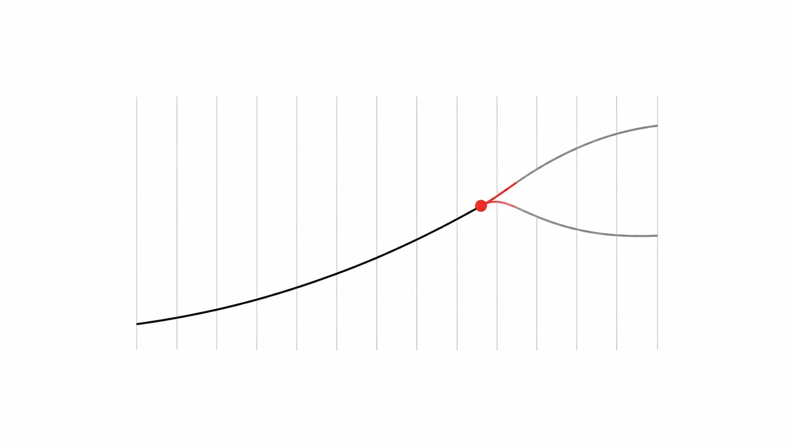

A study guide in plain words
FI
Domain
What you need to know about bonds, swaps and risk before you build a machine that tries out many possible futures for a book of loans — told with simple words and small scenes.

An International-style graphic: flat geometric shapes on a white field, black and grays with one Swiss-red accent, strict alignment and generous whitespace. Reductive and rational — a diagrammatic image, no shadows, no gradients, no ornament. Subject: a single smooth black curve rising left to right across a fine grid of vertical tick marks, with one small Swiss-red circle sitting on the curve and a thin red fork splitting off it into two lighter gray curves. No text labels baked in. Target size ~1280×720px, 16:9 landscape; compose for a small on-page figure with the subject centred and safe margins — it is letterboxed into a 16:9 box, so keep nothing important near the edges.
Generate this with your image agent, then drop the file here.
Contents
- 01The Lines That Tell You What Money Is Worth Later“Curves and conventions”
- 02How Much Do You Lose If the Numbers Move?“Risk measures”
- 03The Three Things You Can Hold: Loans to the Government, Promises on a Date, and Swapped Payments“Treasuries, futures, SOFR swaps”
- 04What Holding Something Pays You, and What Waiting Costs“Carry, roll and funding”
- 05How Easy It Is to Sell, and What Selling Costs“Liquidity and transaction costs”
- 06What If the Big Meeting Surprises Everyone?“Scenarios and the macro context”
- 07Picking the Right Counter-Bets“Hedging and optimization”
- 08Getting the Right Numbers In, Every Morning“Data and operations”
- 09The Rules for Trusting a Machine With Money“Governance and model risk”